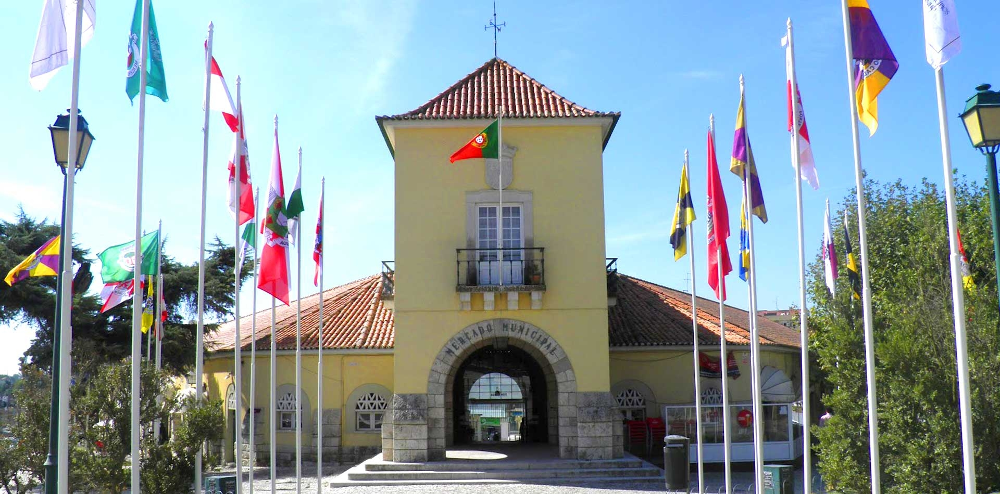

Cartaxo
Situado no coração do Ribatejo, o concelho do Cartaxo ocupa uma área de cerca de 160 km2, sendo constituído por seis freguesias – União de Freguesias do Cartaxo e Vale da Pinta, União de Freguesias de Ereira e Lapa, Pontével, Valada, Vale da Pedra e Vila Chã de Ourique. O campo, o bairro e a lezíria, com o rio aos pés, atribuem ao Cartaxo uma grande riqueza paisagística. A cultura da vinha e a produção de vinho estiveram desde sempre ligadas ao concelho, valendo-lhe o título de Capital do Vinho.
